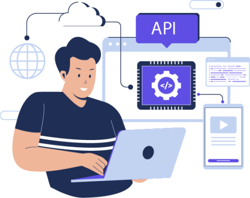
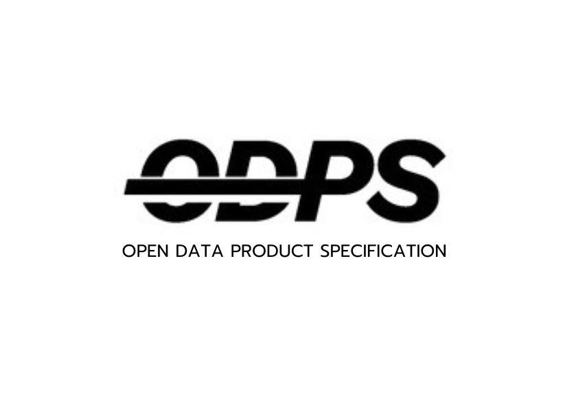

The Open Data Products standards family gives data products a shared structure. Each standard has a clear role. Together, they help humans, platforms, and AI agents understand how data products are defined, organized, connected, and interpreted.
Open Data Product Specification. Defines the data product, including metadata, access, quality, SLA, license, pricing, and strategy.
Read ODPS 4.1Open Data Product Catalogs. Organizes products into catalogs, portfolios, use cases, objectives, KPIs, and signals.
Read ODPC 1.0Open Data Product Graphs. Connects products to use cases, business objectives, KPIs, signals, and relationships.
Read ODPG 1.0Open Data Product Vocabulary. Provides the shared terms and semantics used across the standards family.
Read ODPV 1.0The family creates a context layer for data products. It helps people understand the portfolio, platforms exchange metadata, and AI agents reason across products, use cases, objectives, KPIs, and signals.
Business, technical, governance, quality, access, pricing, and strategy metadata for one data product.
Portfolio objects that group products by catalogs, use cases, objectives, KPIs, and signals.
Graph relationships that show how products, use cases, objectives, policies, and agents depend on each other.
Controlled terms and relationship vocabulary so the family is interpreted consistently.
AI agents need more than access to data. They need structured context that explains what a data product is, where it belongs, how it connects to business value, and which terms mean what.
The Open Data Products family supports this through machine-readable YAML and JSON, reusable schemas, shared vocabulary, graph relationships, examples, and tooling.
The Open Data Products Python SDK makes ODPS, ODPC, ODPG, and ODPV operational. Validate source files, detect document types, explain structures, search artifacts, traverse relationships, and expose the same standards-aware actions to AI agents through MCP.
$ pip install open-data-products
ODPS product specs, ODPC catalogs, ODPG graphs, ODPV vocabulary, schemas, examples, and data contract artifacts.
Validated metadata, readable explanations, searchable structures, relationship paths, and summarized product context.
Don't just take our word for it. Hear from the many organizations and professionals who have transformed their data strategies with Open Data Products, starting from the Open Data Product Specification (ODPS) foundation.
Here's what some of our satisfied users have to say about their experience:
We'd love to hear your story! Share your insights and let us know how the standards family has made a difference for
you.
Your experiences can inspire others and help us enhance our offerings.
Find the specifications, schemas, examples, repositories, and SDK resources for the Open Data Products standards family.
ODPS remains the foundation, with ODPC, ODPG, ODPV, and the Python SDK extending the family into catalogs, graph relationships, shared vocabulary, and AI agent workflows.

Your playbook for defining, cataloging, connecting, governing, and launching data products, now made practical. Dive into real-world guidance, clear documentation, and step-by-step examples that help you move beyond theory and into execution.
Explore standards family examples to see how data products can be structured, cataloged, connected, and interpreted for human and AI workflows.
The following use cases show why a standards family matters. ODPS provides the product foundation, while ODPC, ODPG, and ODPV extend the model into catalog, graph, and vocabulary contexts.
Increase Internal Transparency and Data Reuse
Many organizations struggle
with internal data silos, limiting data sharing and collaboration. A Harvard Business Review
study shows that companies treating data like a product reduce time to implement new use
cases by up to 90% and decrease costs by up to 30%. ODPS breaks down these silos with a
transparent, machine-readable metadata model, enhancing data discovery, comparison, and
reuse across business units.
Boost Sales by Highlighting Data Value
Data monetization often fails
because customers don't perceive value before purchasing. ODPS improves customer experience
by detailing data quality, usage conditions, governance, and alternatives. It offers a
comprehensive framework to convey the data product's value clearly, supporting informed
purchasing decisions.
Facilitate Data Product Team Collaboration
Transitioning to a
data-as-a-product approach changes team structures and responsibilities, requiring
cross-disciplinary collaboration. ODPS provides a standardized model to unify business,
technical, marketing, security, and legal efforts, facilitating effective collaboration and
reducing the need for custom solution
Advance Open Data to the Next Level
Traditional metadata standards like
DCAT are insufficient for the modern data marketplace. ODPS extends DCAT to support both
open and commercial data, improving discoverability, quality, and monetization
opportunities.
Ensure Consistency with Linting
ODPS enables automated linting to
maintain consistent "look and feel" across data products, improving maintenance and user
experience. A machine-readable specification allows organizations to apply design guidelines
effectively.

Enrich API Access with Business Metadata
ODPS integrates business
metadata into API specifications, providing a comprehensive view of data products, enhancing
usability, and supporting multiple languages for broader audience reach.
Prototyping and Mocking for Product-Market Fit
ODPS enables rapid
prototyping and mockups, allowing businesses to test product-market fit before full
development. It supports A/B testing and customer feedback gathering, minimizing waste and
guiding development.
We want to hear from you! Share your insights with us, and let's collaborate to transform your vision
into reality.
Your feedback could lead to exciting new possibilities!
The Open Data Products standards family is developed for practical adoption by organizations, platforms, consultancies, developers, and AI agent builders.
Use the standards in your data product operating model, implement them in platforms, validate files with the SDK, or contribute feedback through GitHub.

The Open Data Products standards family is developed and maintained by people working across data products, governance, interoperability, AI readiness, and open standards.
Subscribe to our blog for the latest updates, best practices, and insights about the standards family.